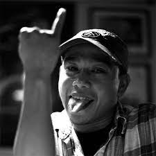

Informasi tentang Tokoh
Pidi Baiq (lahir 8 Agustus 1972) adalah seniman multitalenta asal Indonesia. Dia adalah penulis novel dan buku, dosen, ilustrator, komikus, musisi, dan pencipta lagu. Namanya mulai dikenal melalui grup band The Panas Dalam yang didirikan tahun 1995. Pidi Baiq semakin dikenal para pecinta karya sastra khususnya bergenre humor melalui film Kota Senja, serta novel-novel berikut: